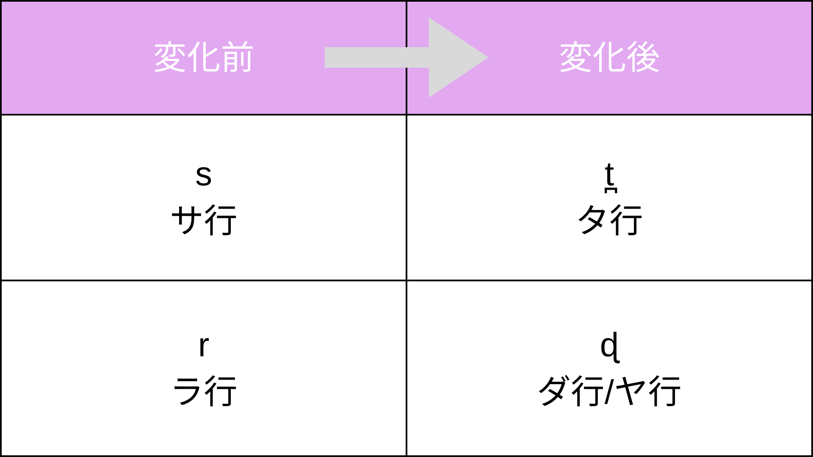
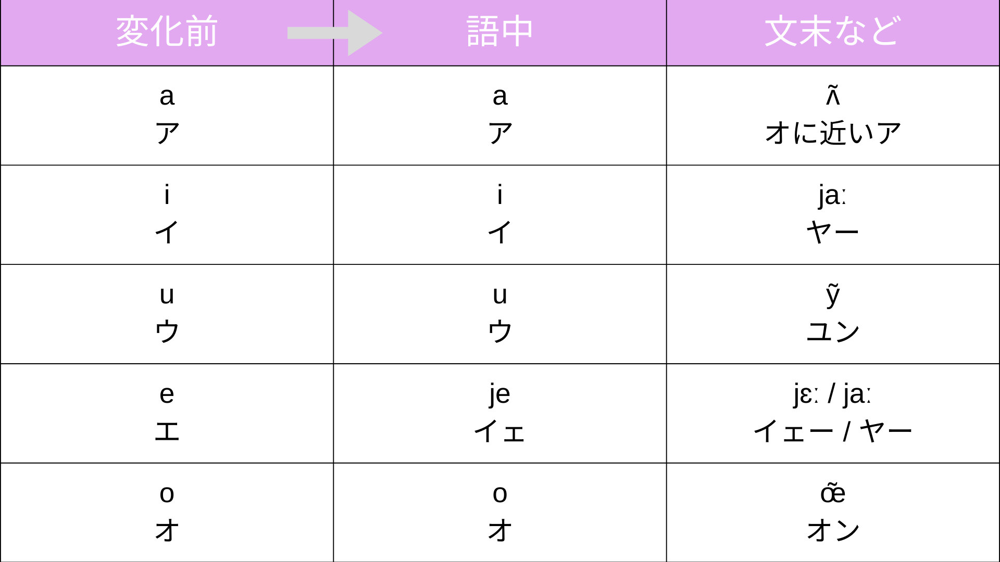
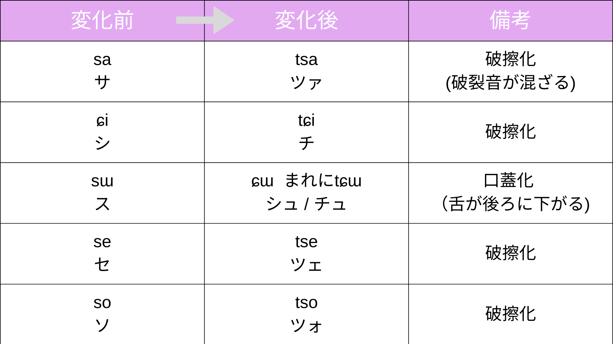
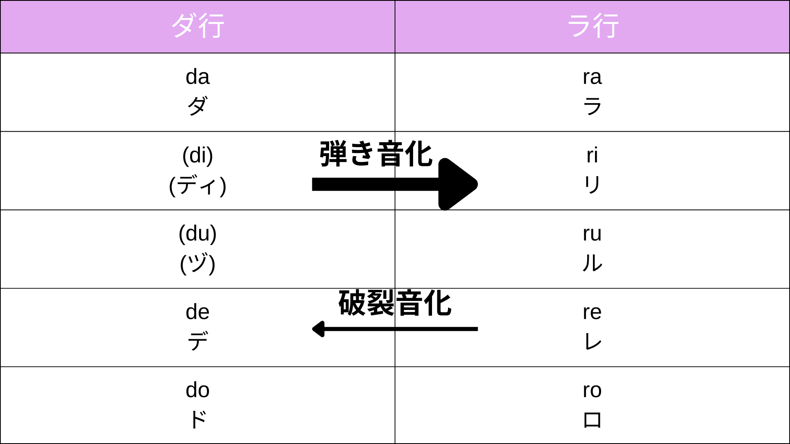
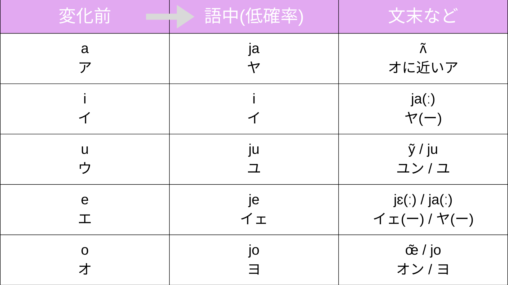
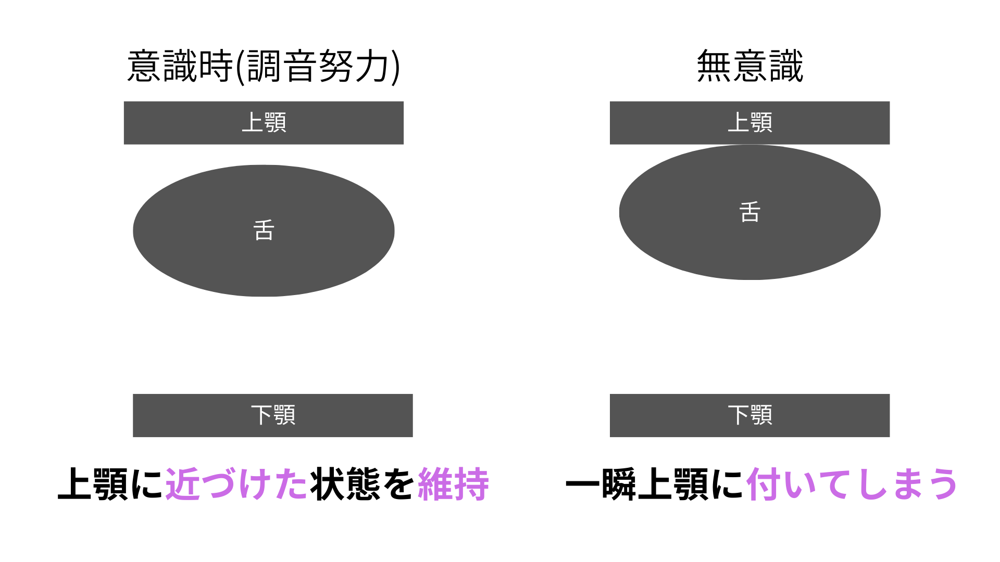
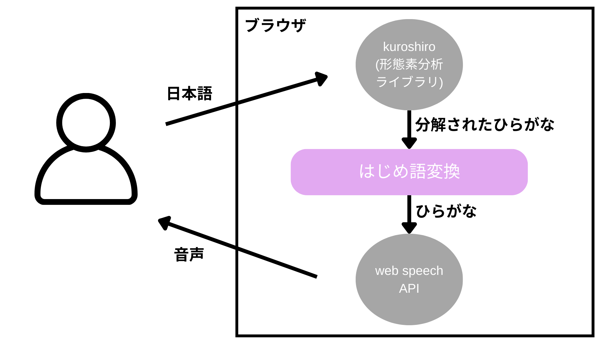
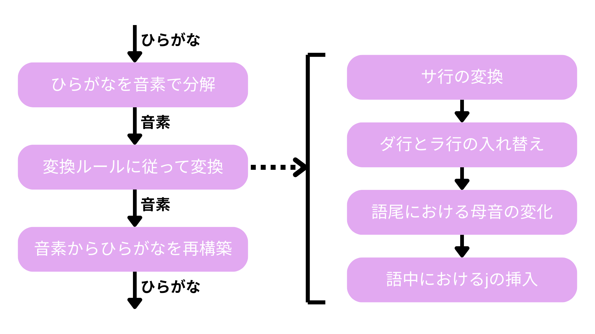

はじめ語変換ツール
作品紹介
ホロライブ所属Vtuber「轟はじめ」さんの独特な発音を言語学的に研究すると共に、それを再現するためのツールを作りました。
本作品はファンとしての二次創作であり、ファンの間で盛り上がれるようにすることを目的としています。
研究概要
ここでは動画の内容を短くまとめます。
まず、この研究は別の方による先行の研究(動画リンク)を元にしています。
先行研究では、以下のような変化法則を立てていました。
子音の変化

母音の変化

これに対して更に細かく研究を行い、新たな変化法則を見つけました。
サ行の変化

ダ行とラ行の交代

母音の変化

メカニズムとして、以下のように舌のコントロールが乱れること、また、舌が通常より後ろ側にある可能性を示しました。

これを元に変換ツールの開発を作成し、公開しました。
研究から同じ文章でも発音が完全には一致しないことが分かっていたため、変換ルールと文章の位置によって確率ベースでの実装を行いました。
全体の流れ

コア機能(はじめ語変換)の詳細

作品リンク
はじめ語変換ツール(ブラウザ)GitHubソース